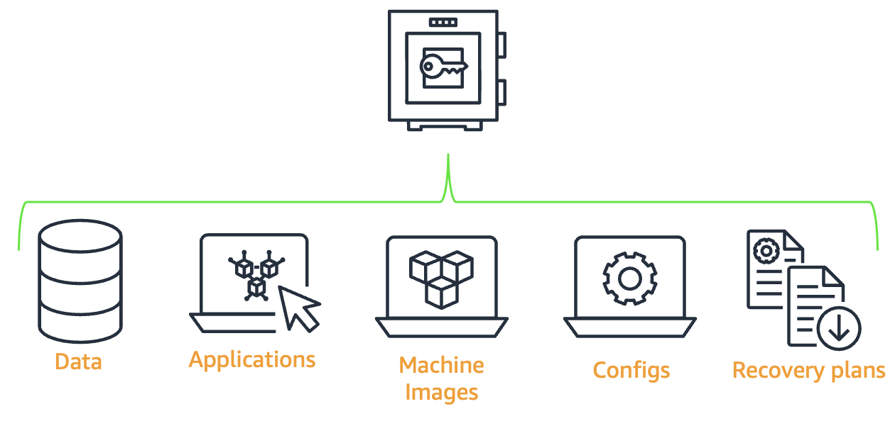
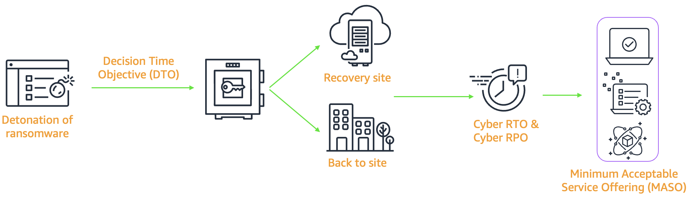
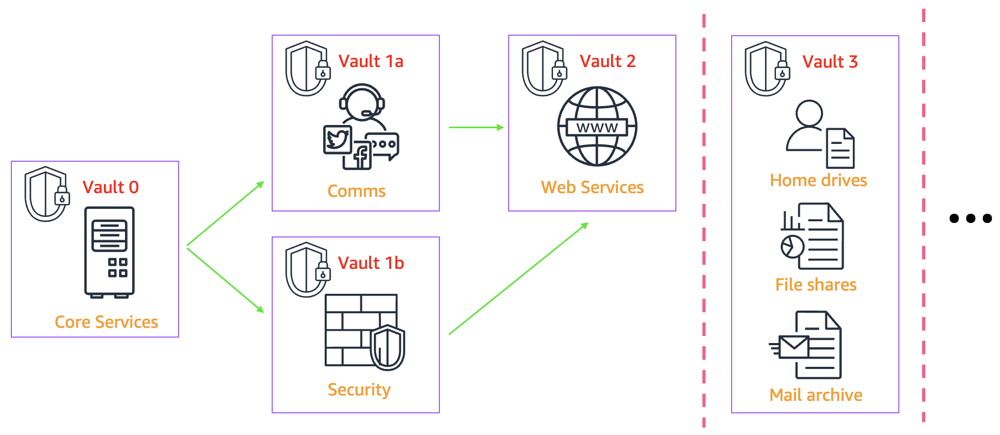
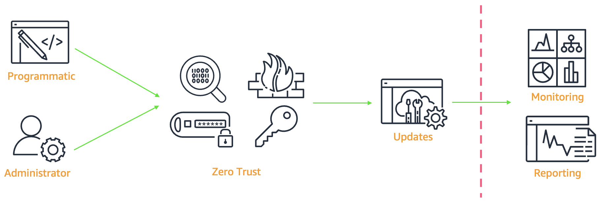
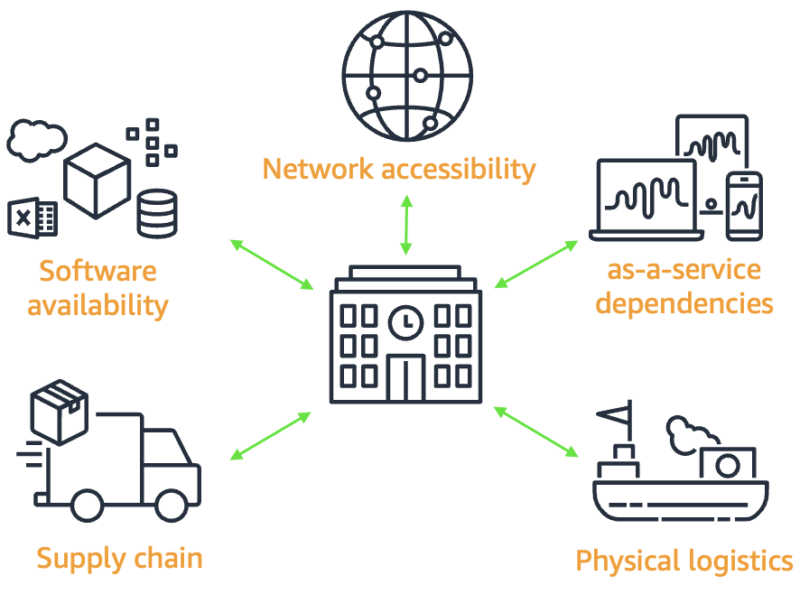
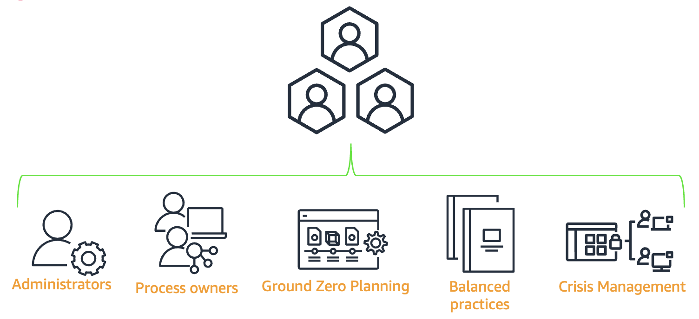
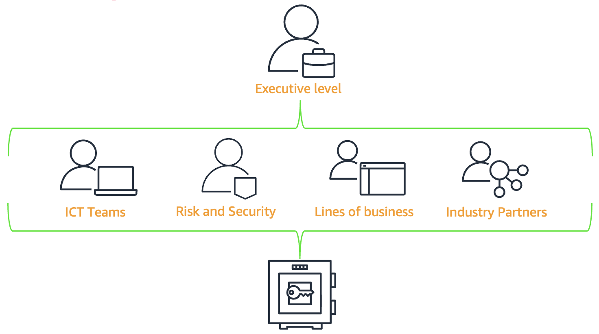

Resilience by Design: Building an Effective Ransomware Recovery Strategy
By Tom Tasker and Danny Johnston | on 02 SEP 2025 | in Amazon FSx for NetApp ONTAP, Amazon GuardDuty, Amazon Macie, Amazon Simple Storage Service (S3), AWS Backup, AWS Elastic Disaster Recovery (DRS), Best Practices, Foundational (100), Thought Leadership | Permalink | Comments | Share
Ransomware incidents have become a priority topic in leadership meetings of modern organizations. Data shows a clear trend: the number of ransomware incidents has more than doubled since the pandemic began, with the financial services sector being particularly targeted. At AWS, our cross‑disciplinary collaboration with global financial services customers, regulators, operational organizations, and industry partners has resulted in a certified architecture for the Cloud Hosted Data Vault (CHDV), commonly referred to simply as “the vault.”
The vault is a key element for strengthening operational resilience against large‑scale cyber incidents. It acts as a completely isolated last line of defense, protecting the most mission‑critical assets of your organization. It enables your business to recover when traditional mechanisms like High Availability (HA), Business Continuity (BC), Disaster Recovery (DR), and backups no longer guarantee recovery. Integrating the vault into your existing resilience practices requires careful planning across multiple dimensions. In this article, we’ll look at the planning considerations and how you can add protective layers to your existing HA, BC/DR, and backup solutions. We’ll also address the key factors not only in technology implementation but also in people, process, and practical aspects that make the vault effective as a complete solution.
Every business unit owner may say “everything, everywhere” needs to be protected. In reality, that’s not feasible — at least not immediately. When considering a large‑scale cyber incident, it’s easy to assume that all data, applications, and services are critical and must be vaulted. You might think that if a component exists in production, it must be necessary. However, trying to vault everything without a proper upfront review can lead to massive data volumes, high costs, and unintended recovery latency.
In a real cyber incident, ask yourself: what are the core IT functions and operational services you need to restart business operations in the next 12, 24, or 48 hours — and just as importantly, what is not necessary? These core functions and services are often referred to as the Minimum Viable Business (MVB) — the minimum required for the business to continue operating. They include not only services for your customers but also for your second‑, third‑, and fourth‑party partners.

Figure 1: What belongs in the vault — focus on core IT functions and operational services.
This question cannot be answered overnight. The vault is not just a technology solution — it requires engagement from multiple departments. Defining your MVB and how best to protect it depends on the combined input, experience, and knowledge from many groups: IT, security, legal, business unit owners, application owners, and senior leadership.
Cyber incidents are designed to make recovering your systems or services difficult — even nearly impossible — through standard operational recovery mechanisms like HA, BC, DR, and backups. Attackers aim to maximize disruption with minimal recoverability to force victims to pay ransom.
A large‑scale cyber incident cannot rely solely on traditional operational recovery methods, so you must prepare the following key elements in advance to respond effectively.

Figure 2: What recovery looks like — what once took seconds may now take days; plan ahead.
Whether you choose one vault for the entire system or separate vaults per service, it’s important to balance manageability, practicality, and security.

Figure 3: Vault segmentation — balance manageability, content, and recovery processes.
The flexibility AWS provides is invaluable — you can experiment, fail, and iterate to find the optimal solution without accruing “technical debt” along the way. What seems feasible on the whiteboard may fail in the first test, and the lessons learned can be applied to the next vault iteration. Adapting flexibly to business needs increases confidence in both the solution and the recovery process. What goes into the vault is not just data; input from application owners and business units is equally essential.
Your vault must be isolated from the operational plane so any cyber incident spreading in production is stopped at the vault boundary. Without this separation, the vault can also be compromised.
Traditional air‑gapped solutions often involve physical isolation such as unplugging connections or removing storage media, creating a literal “air gap” between the protective mechanism and the operational environment. How do we bring this isolation concept to the cloud and the vault? Re‑creating equivalent security controls in the cloud requires:

Figure 4: Vault administration — deliberate isolation while maintaining observability.
Physical solutions are often overlooked when considering responses to cyber incidents. While focusing on core services, applications, and foundational infrastructure, we may ignore external physical dependencies that also play a critical role in recovery.
Examples:

Figure 5: Logistics and service providers — broaden plans to include external dependencies.
Attack sophistication can lie in causing multiple failures simultaneously that individually would be minor and predictable in normal operations. When these issues occur broadly at the same time, they compound, making remediation more complex and delayed.
People are responsible for managing and operating cyber vaulting, defining best practices, and leading recovery when needed. Choosing the responsible team is critical but not always straightforward.
Vault principles reflect that it spans protection, planning, and process. It requires contributions from multiple stakeholders — it cannot come from a single group.
Business stakeholders — not the backup team — should set recovery priorities based on system dependencies, compliance requirements, and business impact. Clear communication between technical and business teams is essential to build effective cyber incident recovery plans.

Figure 6: People and process — balancing both is foundational to best practices.
This cross‑functional collaboration results in recovery plans your organization must adopt and follow. However, this can inadvertently create inefficient recovery scenarios if processes are too cumbersome, leading to poor adherence.
Cumbersome procedures, lack of flexibility, and human tendency to choose the path of least resistance can prevent even good plans from being executed properly. While this may not immediately affect security or recovery, the worst time to discover vault principles aren’t being followed is when you need them most.
To ensure effective recovery from cyber incidents, your organization must embed best practices into daily operations. This requires a careful balance between strong recovery requirements and practical, sustainable processes so teams can consistently adhere without undermining security or operational performance.
Any additional work in an organization increases cost and effort and divides time and resources from other activities. No CFO will accept a technology solution that consumes time, money, and effort without generating revenue.
The vault is not part of your core business operations. Its intrinsic value and purpose must be clearly understood. This can only be achieved with sponsorship and direction from the highest leadership — a top‑down commitment from the executive team.

Figure 7: Sponsorship — the top‑down approach aligns the entire organization.
AWS provides multiple layers of defense against ransomware. To immediately protect data across many AWS data services, AWS Backup offers centralized backup management with immutable backups and logical isolation to prevent unauthorized modification and enable swift recovery. Amazon S3 with versioning and Object Lock, along with Amazon FSx for NetApp ONTAP, create tamper‑resistant storage environments for critical data.
For detection, Amazon GuardDuty monitors suspicious activity, while AWS Security Hub provides a consolidated view of security posture. Amazon Macie identifies sensitive data that may be targeted, while AWS Shield and AWS WAF protect against DDoS and web exploits. AWS Network Firewall filters malicious traffic at the network layer. Partners like elastio integrate with AWS Backup to verify data integrity near real‑time, enabling “clean” recovery with minimal downtime and data loss.
For identity protection, IAM enforces least privilege, while AWS Organizations centralizes security policy management across accounts. AWS Config and AWS CloudTrail provide configuration change tracking and API activity auditing — essential for post‑incident forensics.
Cyber incidents, especially ransomware, are increasing annually. Shifting from protecting against random failures to targeted attacks requires rapid organizational response to shrink the “risk window” — where a severe incident can cripple services or even halt business operations.
Technology is only part of the equation. Proactive disruption planning is critical to eliminate flawed operational assumptions. A cyber incident is not a daily operation; plan and prepare so critical decisions aren’t made under duress.
Strengthening cyber resilience requires an organization‑wide strategy. Start by defining what successful recovery means for your business, then plan for worst‑case scenarios with detailed playbooks. Continually iterate, test, and validate recovery processes to ensure they work when needed.
Most importantly, cyber resilience extends beyond IT — it’s an enterprise‑wide challenge. Every function — operations, finance, leadership, and frontline staff — plays a role in building and executing resilience when incidents occur. Success depends on making cyber resilience a shared responsibility across the organization, from the CEO to system administrators.
TAGS: Amazon FSx for NetApp ONTAP, Amazon Simple Storage Service (Amazon S3), AWS Backup, AWS Cloud Storage, AWS Elastic Disaster Recovery (DRS)
Tom is a Storage Solution Architect for Global Financial Services at Amazon Web Services. He works with some of the world’s largest and most influential financial services companies, regulators, and partners to drive solutions integrated and operated on AWS storage.
Danny leads the Global Financial Services Storage Business Development Team at Amazon Web Services. He is an experienced business development professional specializing in enterprise storage solutions, driving strategic partnerships with customers and regulators. He is passionate about helping financial services organizations optimize data infrastructure and accelerate digital transformation initiatives.